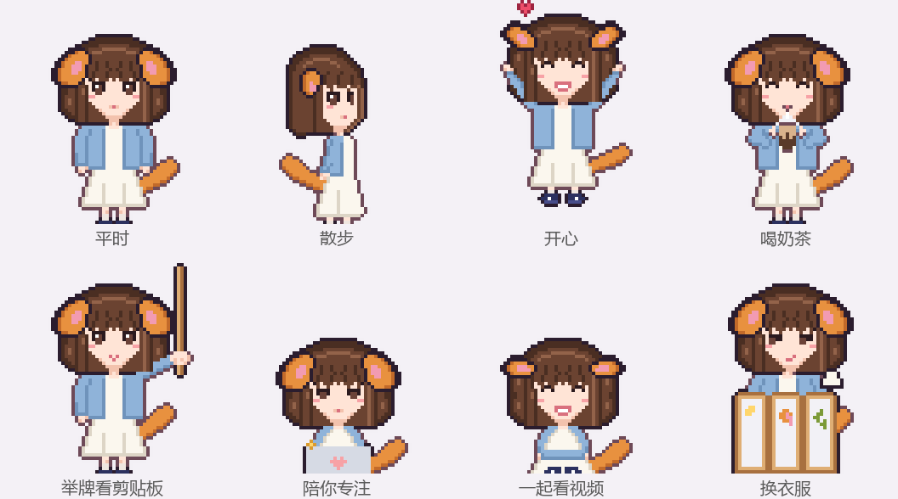

DESKTOP PET · OPEN SOURCE
可以自己定制的
像素桌宠。
一只小小的伙伴，一点属于你的日常。
一只住在 Windows 任务栏上方的像素小人。这个仓库是一个预制包：引擎、动作、功能都做好了，附带一只示例宠物「小柴」。你可以照着教程，用 Claude Code 或 Codex 把它改成你自己的宠物：照你（或者你的朋友、你家猫）的样子画，有自己的名字、口头禅、爱吃的东西和衣服。

👉 想做自己的宠物：选择 Claude Code 详细教程 或 Codex 全流程与可复制 Prompt。
01它会做什么
-
日常：
- 在屏幕两边散步、发呆、坐下、打瞌睡。
- 被戳会生气，摸头会开心，拎起来会挣扎，扔出去会摔晕。
- 喂东西吃：吃多了要上厕所，偶尔还会放屁。
-
举牌看剪贴板：你复制东西时，举块小牌子给你看。
- 剪贴板记录在「小窝」里。
- 像密码的内容会打码。
- 番茄钟：抱着小电脑陪你专注。
- 提醒：喝水、久坐、熬夜提醒，还有待办便签。
- 换装和发型：衣柜里换衣服（在屏风后面换），喝生发药水变长发、剪头发变短发。
-
防干扰模式：学习时躲到任务栏后面只露半个脑袋，或者安静陪伴、完全隐身。
- 「专注监督」：在分心网站上待久了会被抓包。
- 陪看：你看视频、看直播时，它坐到一边陪你看，偶尔笑一下，从不催你。
- 自定义台词：在「小窝 → 台词」里自己教它说话。
- 两只一起：两只宠物可以同时开，会互相打招呼、串门、一起躲。
02轻、不打扰
- 不用安装：一个 exe，不用装任何运行库（Windows 10/11 自带 .NET Framework 4.8）。exe 大约 0.7MB。
- 占用低：平时 CPU 约 0.3% 单核，睡觉 0.1%。全屏游戏时自动躲起来，完全不占资源。
- 不抢焦点：点它不会抢走你窗口的焦点，透明的地方可以点穿。
-
隐私：
- 剪贴板记录默认只在内存里。
- 窗口标题只在本机比对，不保存、不上传。
03编译和运行
除了 Windows 自带的 C# 编译器，什么都不用装。在仓库文件夹里打开 PowerShell：
PowerShell
Set-ExecutionPolicy -Scope CurrentUser RemoteSigned # 第一次需要：允许运行本地脚本
.\build.ps1 art # 从 art\<宠物>\ 的文本源文件生成图集
.\build.ps1 # 编译，得到 out\<编号>.exe
.\build.ps1 run # 编译并运行
.\build.ps1 test # 跑单元测试
.\build.ps1 dist # 打包成 zip，发给朋友
.\build.ps1 new 名字 # 复制示例宠物，开始做你自己的所有命令都可以加 -Char <宠物>，只处理其中一只。
04做自己的宠物
-
两种做法：
- 用 AI 编程工具帮你做：Claude Code 教程 / Codex 全流程教程。
- 想手动改，看 宠物由哪些文件组成 和 怎么改像素图。
-
照片放哪：做宠物用的照片放进
reference_pics/，这个文件夹在.gitignore里，不会被提交。
05目录
| 路径 | 内容 |
|---|---|
src/Core/ | 行为引擎、物理、图集格式、角色档（纯逻辑，可测试） |
src/App/ | 窗口、渲染、托盘、剪贴板、小窝 |
src/Tests/ | 单元测试（也检查每只宠物的角色档和台词是否齐全） |
art/<宠物>/ | 像素图的文本源文件：调色板、部件、动作表、衣服、造型 |
art/tool/ | 把文本源文件变成图集的构建工具 |
assets/<宠物>/ | 角色档、台词、生成的图集，编译时嵌进 exe |
docs/ | 教程、动画规范、技术调研 |
06授权
-
代码：MIT（见
LICENSE）。 -
像素字体：Fusion Pixel Font，SIL Open Font License 1.1（见
art/fonts/）。